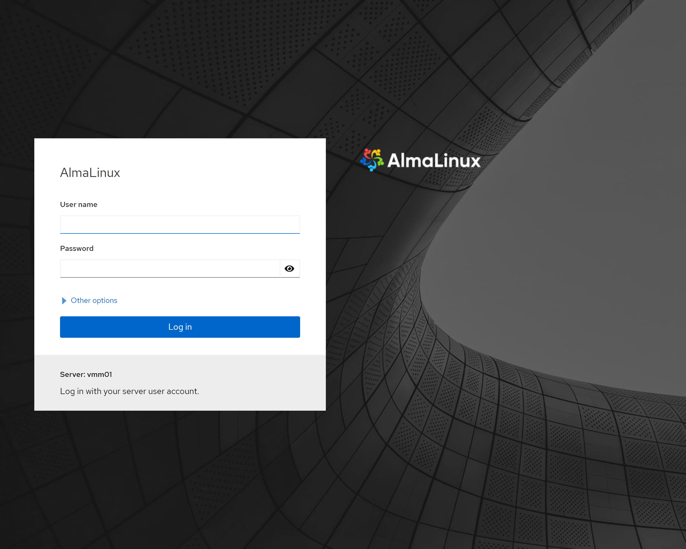
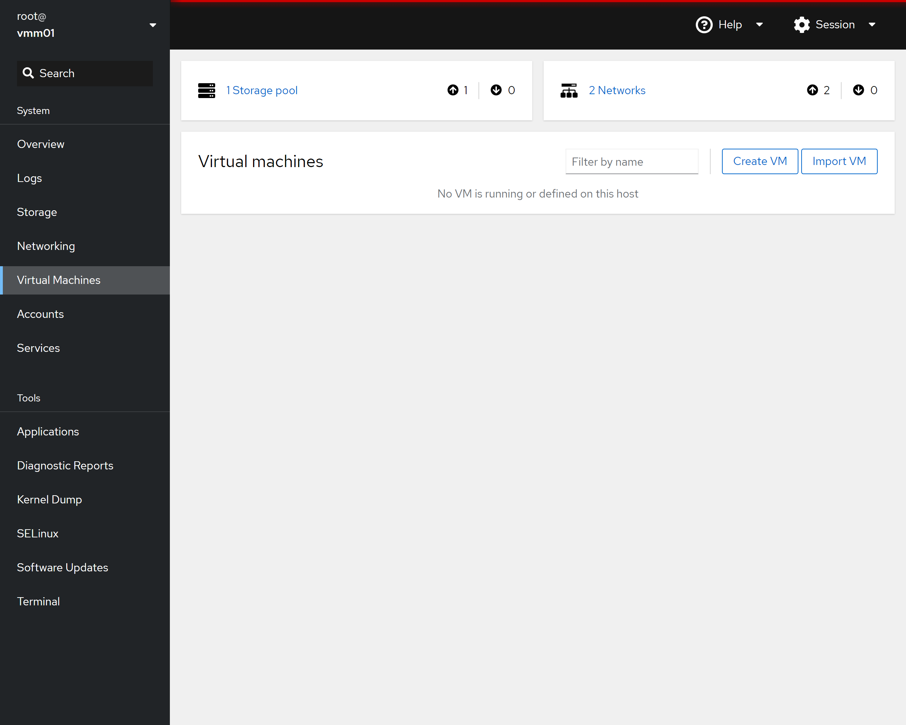
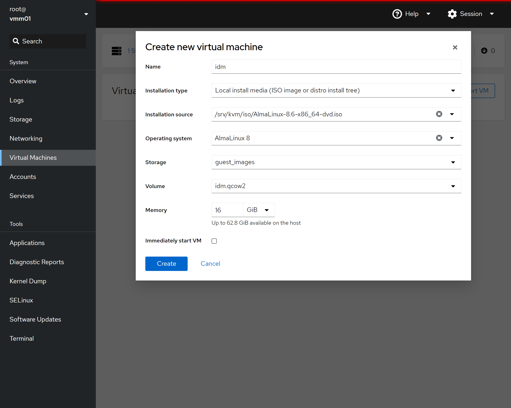
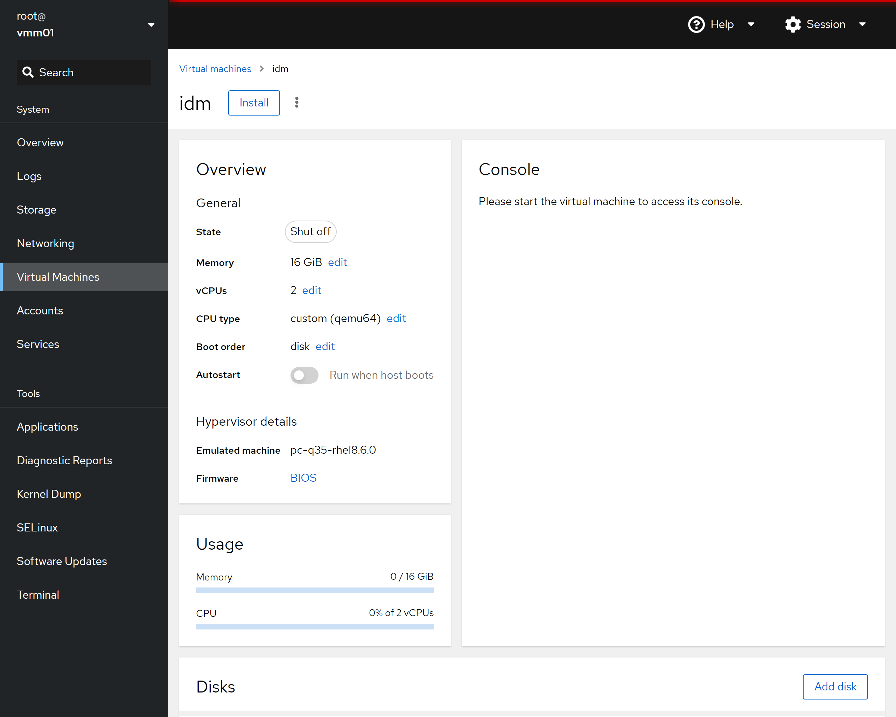
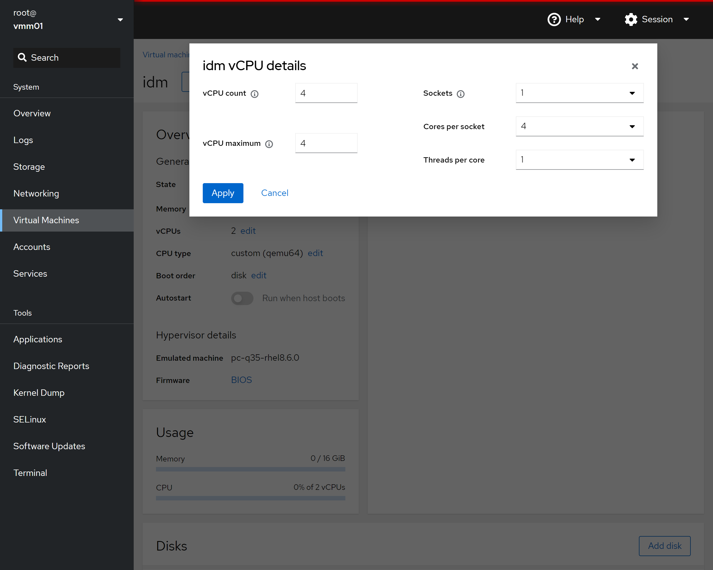
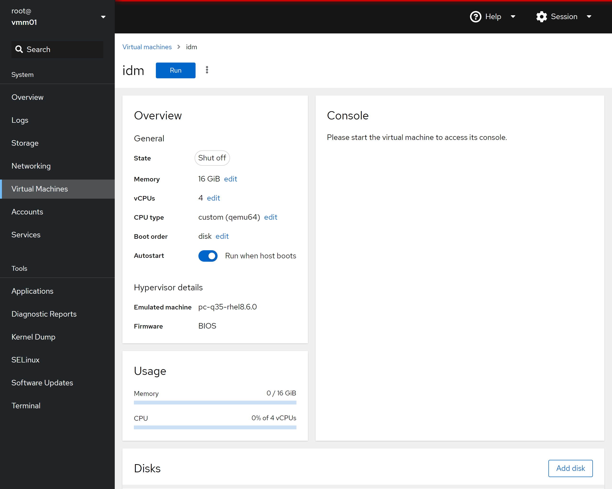
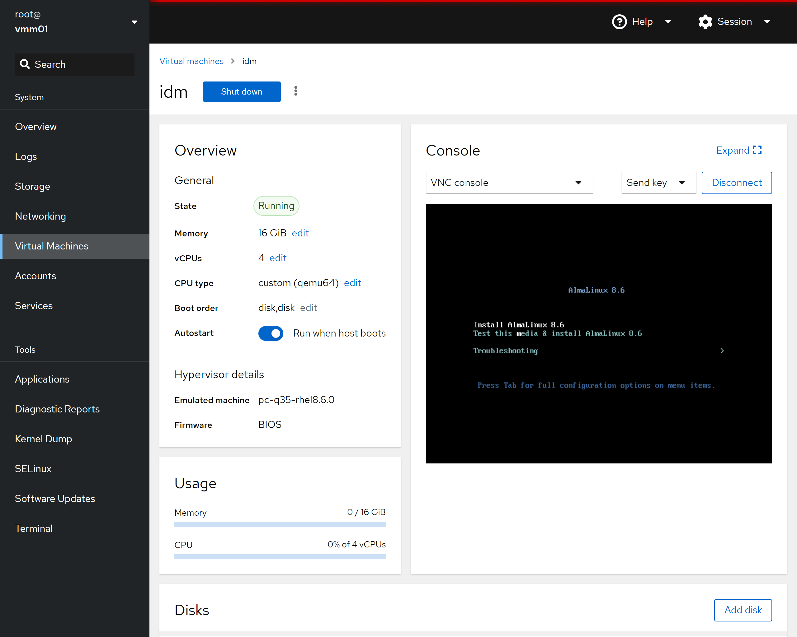

Virtual Machine Manager Deployment Guide#
The following instructions are for deploying the Virtual Machine Managers.
Prerequisites#
This guide is written for a Red Hat Enterprise Linux 8 based operating system which is operating within a cluster of systems and the following are the prerequisites:
If deploying as a standalone service, adjust the hostname fields accordingly and omit steps involving IdM, NFS, and follow-on deployment guides.
Follow-on Deployments#
The following guides can be applied after the deployment of their associated nodes.
Post Deployment#
The Cockpit Management Web Interface can be accessed at the following URLs:
Virtual Machine Manager 1: https://vmm01.engwsc.example.com:9090
Virtual Machine Manager 2: https://vmm02.engwsc.example.com:9090
Deployment Scripts#
An example bash script of the instructions has been provided:
deploy-vmm01.sh
deploy-vmm02.shUsername:
root
Password:ROOT_PASSWORD
Deployment Steps#
Warning
The initial server setup involves changes to the server’s network interfaces and should be performed using an Out-Of-Band management console or direct server connection.
Note
Instructions assume execution using the root account.
Install dependencies:
dnf -y install tar openssl-devel cockpit cockpit-packagekit \ cockpit-pcp cockpit-storaged cockpit-system cockpit-ws \ cockpit-machines qemu-kvm qemu-kvm-block-iscsi \ qemu-kvm-block-curl qemu-kvm-common qemu-kvm-block-ssh \ qemu-kvm-block-iscsi lm_sensors lm_sensors-devel lm_sensors-libs \ virt-install libosinfo
Enable Cockpit:
systemctl enable --now cockpit.socket firewall-cmd --zone=public --add-service=cockpit --permanent systemctl reload firewalld
Create guest_images storage pool:
# Create KVM directories mkdir -p /srv/kvm mkdir /srv/kvm/iso mkdir /srv/kvm/img mkdir /srv/tmp # Create pools virsh pool-define-as "guest_images" dir - - - - "/srv/kvm/img/" virsh pool-build 'guest_images' virsh pool-start 'guest_images' virsh pool-autostart 'guest_images'
Create storage volumes:
Virtual Machine Manager 1:
qemu-img create -f qcow2 -o preallocation=off /srv/kvm/img/idm.qcow2 96G qemu-img create -f qcow2 -o preallocation=off /srv/kvm/img/gitlab.qcow2 2T qemu-img create -f qcow2 -o preallocation=off /srv/kvm/img/slurm.qcow2 96G qemu-img create -f qcow2 -o preallocation=off /srv/kvm/img/graylog.qcow2 96G qemu-img create -f qcow2 -o preallocation=off /srv/kvm/img/ansible.qcow2 96GVirtual Machine Manager 2:
qemu-img create -f qcow2 -o preallocation=off /srv/kvm/img/indfuxdb.qcow2 96G qemu-img create -f qcow2 -o preallocation=off /srv/kvm/img/grafana.qcow2 96G qemu-img create -f qcow2 -o preallocation=off /srv/kvm/img/docker.qcow2 2T qemu-img create -f qcow2 -o preallocation=off /srv/kvm/img/mirror.qcow2 96G qemu-img create -f qcow2 -o preallocation=off /srv/kvm/img/vmg01.qcow2 96G
Create Virtual Machine Bridge:
Important
Verify the name of the ethernet interface and the IPv4 address. The interface name may be different than “eno1” and the IPv4 addresses should be the value for your environment.
Virtual Machine Manager 1:
IP_ADDRESS="192.168.1.51"Virtual Machine Manager 2:
IP_ADDRESS="192.168.1.52"Virtual Machine Manager 1 and Virtual Machine Manager 2:
# Bridge Configuration ETHERNET_INTERFACE="eno1" BRIDGE_NAME="vmbr0" IP_DNS="192.168.1.1" IP_GATEWAY="192.168.1.1" # (Informational Only) List Interfaces ip addr # (Informational Only) List Active Network Connections nmcli conn show # Create a bridge interface nmcli connection add type bridge con-name ${BRIDGE_NAME} ifname ${BRIDGE_NAME} # Add static IP address nmcli conn modify ${BRIDGE_NAME} ipv4.addresses "${IP_ADDRESS}/24" nmcli conn modify ${BRIDGE_NAME} ipv4.gateway "${IP_GATEWAY}" nmcli conn modify ${BRIDGE_NAME} ipv4.dns "${IP_DNS}" nmcli conn modify ${BRIDGE_NAME} ipv4.method manual # Assign the interfaces to the bridge nmcli connection add type ethernet slave-type bridge autoconnect yes \ con-name bridge-${BRIDGE_NAME} ifname ${ETHERNET_INTERFACE} master ${BRIDGE_NAME} # Bring up or activate the bridge connection nmcli conn up ${BRIDGE_NAME} # Bring down wired connection nmcli conn down ${ETHERNET_INTERFACE} # (Informational Only) Display the network interfaces nmcli device status # (Informational Only) List Interfaces ip addr # (Informational Only) Show Bridge Details nmcli -f bridge con show ${BRIDGE_NAME} # Declaring the KVM Bridged Network virsh net-list --all cat << 'EOL' > /tmp/bridge.xml <network> <name>vmbr0</name> <forward mode="bridge"/> <bridge name="vmbr0"/> </network> EOL virsh net-define /tmp/bridge.xml virsh net-start ${BRIDGE_NAME} virsh net-autostart ${BRIDGE_NAME}
Upload Guest ISO Images:
Note
The ISO file name will vary depending OS and version being used.
scp rhel-8.8-x86_64-dvd.iso root@vmm1.engwsc.example.com:/srv/kvm/iso/rhel-8.8-x86_64-dvd.iso scp rhel-8.8-x86_64-dvd.iso root@vmm2.engwsc.example.com:/srv/kvm/iso/rhel-8.8-x86_64-dvd.iso
Suppress Negotiate Headers:
Note
This is optional and prevents falling back to HTML login boxes in Windows browsers.
cat >> /etc/cockpit/cockpit.conf <<EOF [gssapi] action = none [negotiate] action = none EOF
8 Reboot system:
reboot
Log into Cockpit:
Important
The remainder of this guide requires using the Cockpit Management Console.
Log into the Cockpit Management Console using the root account.
Virtual Machine Manager 1: https://vmm01.engwsc.example.com:9090

Virtual Machine Manager 2: https://vmm02.engwsc.example.com:9090
Create the Virtual Machine Guests:
The next step will need to be repeated for all VMs hosted by Virtual Machine Manager 01 and Virtual Machine Manager 02 nodes.
* Click on the "Virtual Machines" link on the left of the page
* Click on the "Create VM" button on the right of the page * Provide a name that matches the VM you are creating in all lower case characters * In the "Installation type" drop-down select "Local install Media (ISO image or distro install tree) * In the "Installation source" drop-down/box add the path to the ISO (ex. /srv/kvm/iso/rhel-8.8-x86_64-dvd.iso) * In the "Operating system" drop-down/box add or select "Red Hat Enterprise Linux 8.8 (Ootpa)" * In the "Storage" drop-down/box select "guest_images" * In the "Volume" box select the appropriate VM guest image file (ex. idm.qcow2) * In the "Memory" box select 16 GiB (see guides for the amount but typically it is 16GiB) * Verify "Run unattended installation" *IS NOT* checked * Verify "Immediately start VM" *IS NOT* checked * Click "Create"
* Click on the name of the VM just created
* Click on the "edit" link next to "vCPUs"
* Change "vCPU maximum" to 4 * Change "vCPU count" to 4 * Change "Sockets" to 1 * Change "Cores per socket" to 4 * Change "Threads per core" to 1 * Click on "Apply"
* On the Virtual Machine details page... * Verify "Run when host boots" is enabled * Click on "Install" or "Run" ("Install" is shown on first run)
* Install the VM guest using the other guides